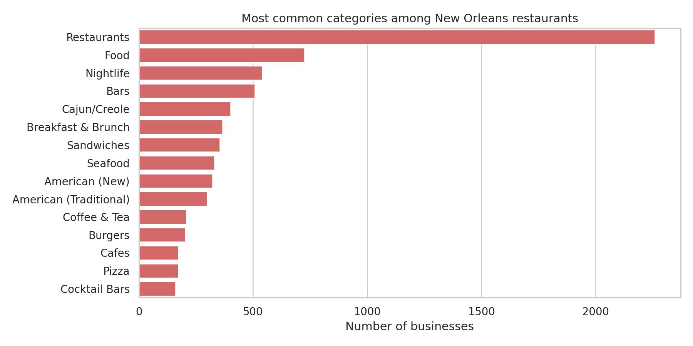
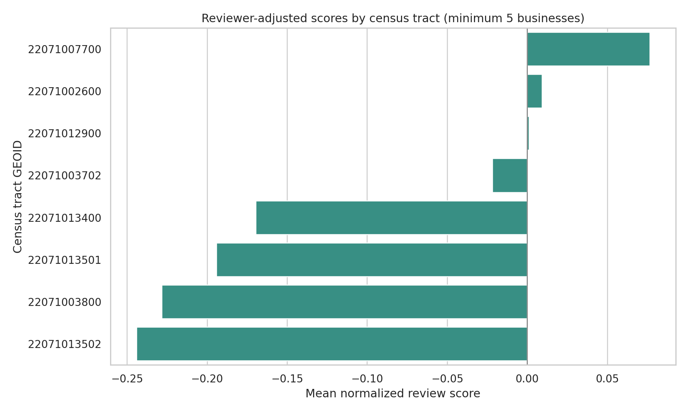
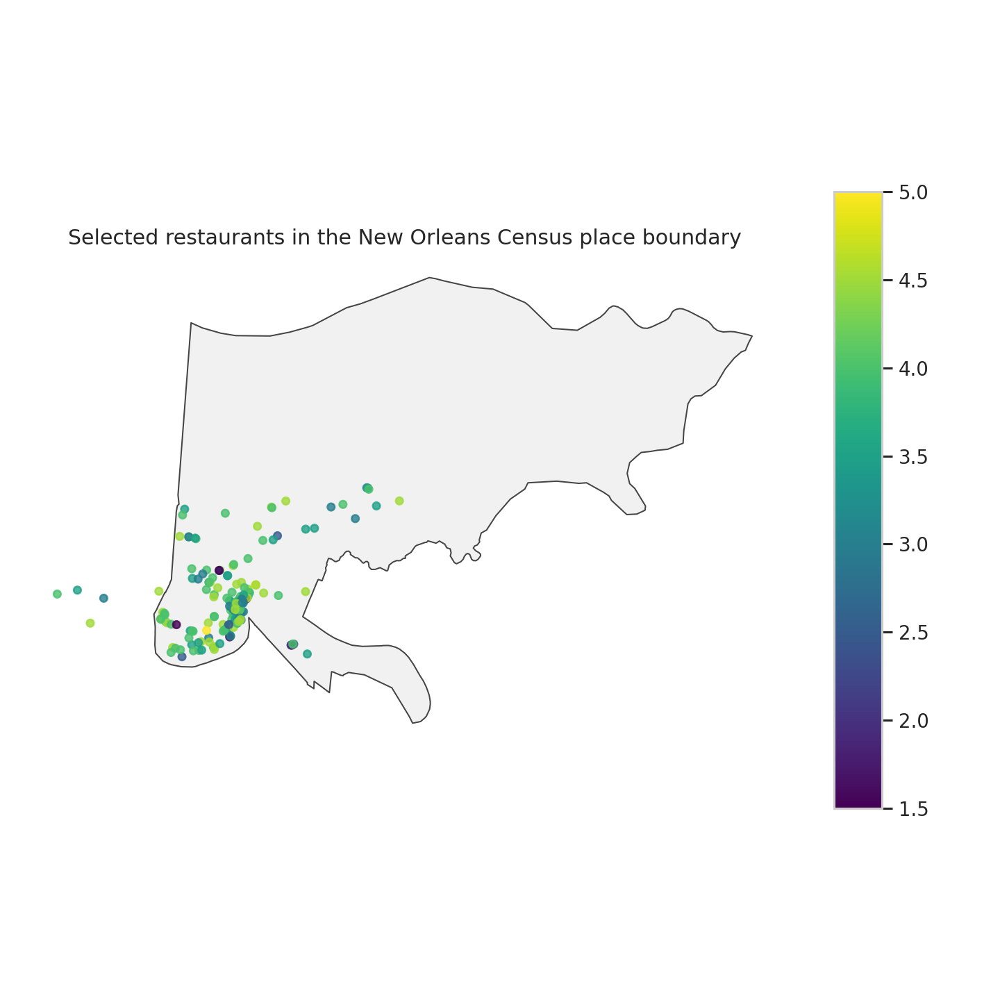
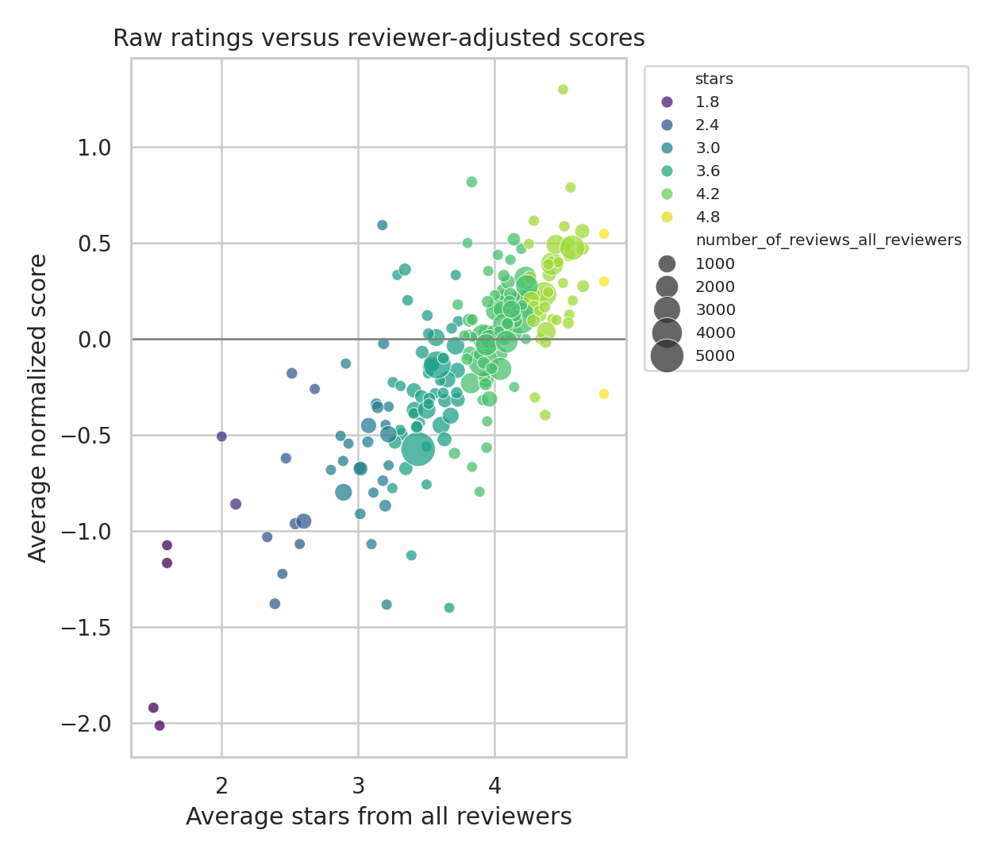

Where can someone find the best taste of Orleans cuisine?
Research question
Which New Orleans geographic area offers the strongest combination of ratings, review volume, and reviewer-adjusted scores for restaurants associated with Cajun/Creole, Sandwiches, or Seafood?
The project treats “best” as more than the highest star average. It compares business ratings, all-reviewer review scores, review volume, and a normalized score that accounts for each reviewer’s typical scoring level.
Executive summary
The theme is broad enough to satisfy the geographic coverage requirement while remaining culturally coherent. The 217 businesses span 67 tracts and 86 block groups, creating meaningful spatial variation.
Data and workflow
The source is Yelp’s official educational Yelp Open Dataset. The page reports 6,990,280 reviews and 150,346 businesses. The downloaded JSON archive was processed locally; raw files are not included here.
- Imported the business JSON and retained the columns used by import.R.
- Filtered state == "LA", city == "New Orleans", and category text containing “Restaurants.”
- Selected businesses matching at least one of Cajun/Creole, Sandwiches, or Seafood.
- Streamed the complete review JSON and retained reviews for selected business_id values.
- Spatially joined coordinates to 2024 Census TIGER/Line tracts and block groups.
- Computed raw summaries and reviewer-adjusted scores using the supplied analysis logic.
The supplied R files define the intended workflow. This report was executed with an equivalent Python implementation because the available runtime did not include R; the supplied R sources remain linked below.
Category selection
These categories form a practical “taste of New Orleans” theme rather than simply being the three most frequent labels. Inclusion required at least one selected category, which avoids excluding restaurants that specialize in only one part of the theme.
| Selected category | Businesses in category |
|---|---|
| Cajun/Creole | 401 |
| Sandwiches | 354 |
| Seafood | 331 |

Geographic comparison
Census tracts are the primary comparison system because they provide neighborhood-scale units while preserving spatial detail. The selected businesses occur in 67 tracts, exceeding the requirement of at least seven geographic areas. Five businesses did not receive a tract or block-group assignment; these were retained and reported rather than silently removed.
| tract_geoid | restaurants | avg_business_rating | total_yelp_reviews | avg_raw_review_score | avg_normalized_score |
|---|---|---|---|---|---|
| 22071007700 | 10 | 4.050 | 9562 | 4.065 | 0.077 |
| 22071002600 | 5 | 3.900 | 1985 | 3.976 | 0.009 |
| 22071012900 | 6 | 4.250 | 3787 | 4.225 | 0.001 |
| 22071003702 | 5 | 3.400 | 393 | 3.334 | -0.022 |
| 22071013400 | 34 | 3.588 | 18392 | 3.576 | -0.170 |
| 22071013501 | 14 | 3.607 | 8287 | 3.640 | -0.194 |
| 22071003800 | 6 | 3.500 | 4589 | 3.594 | -0.228 |
| 22071013502 | 35 | 3.600 | 23230 | 3.604 | -0.244 |


Reviewer-adjusted ratings
Reviewers who contributed at least five reviews to the selected category set were eligible (954 reviewers). For each reviewer, the normalized score is the review’s star value minus that reviewer’s mean score across the selected restaurants. Positive values indicate a review was more favorable than that reviewer’s personal baseline.
This adjustment is a sensitivity analysis, not a replacement for raw ratings. It helps show how reviewer severity may influence comparisons.

| business_name | stars | review_count | number_of_reviews_all_reviewers | average_stars_all_reviewers | number_of_reviews_eligible_reviewers | average_normalized_score |
|---|---|---|---|---|---|---|
| Dona's Pizza | 4.5 | 6 | 6 | 4.500 | 1.0 | 1.300 |
| Toula's Creole Kitchen | 4.0 | 87 | 89 | 3.831 | 1.0 | 0.818 |
| Petite Clouet Cafe | 4.5 | 18 | 18 | 4.556 | 4.0 | 0.790 |
| The Bower | 4.5 | 41 | 42 | 4.286 | 9.0 | 0.616 |
| Mermaids | 3.0 | 16 | 17 | 3.176 | 3.0 | 0.593 |
| Chap's Chicken | 4.5 | 53 | 55 | 4.509 | 9.0 | 0.587 |
| Restaurant Rebirth | 4.5 | 521 | 534 | 4.640 | 35.0 | 0.562 |
| Doily | 5.0 | 9 | 10 | 4.800 | 3.0 | 0.548 |
| Mr John's Steakhouse | 4.0 | 294 | 300 | 4.140 | 61.0 | 0.519 |
| Rimon at Tulane Hillel | 4.0 | 5 | 5 | 3.800 | 1.0 | 0.500 |
Conclusions and limitations
Tract 22071007700 is the strongest candidate under the five-business minimum-size rule, but its lead should be interpreted alongside business counts and review volume. Restaurant stars are Yelp’s business ratings, while review averages are calculated from joined review records; small review counts can produce unstable means.
- Yelp city labels and Census polygons are different geographic systems, so edge cases and unmatched coordinates are possible.
- Category labels may omit restaurants that serve similar food without using one of the selected labels.
- Reviewer normalization uses activity within this selected category set, not a reviewer’s entire Yelp history.
- Yelp data reflects who chooses to review and is not a random sample of diners.
- The results identify promising areas for further investigation; they do not establish causal reasons for rating differences.